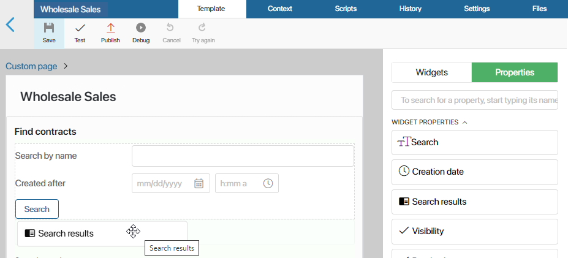
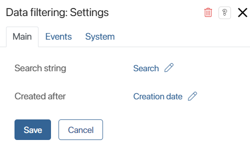

In BRIX, you can create a custom event in a widget and send it to another widget. Events are a button click, data entry in a field, etc. To record it, you can add a variable of the Event type in the widget context. When placing a widget on a form or a page, you can see a custom event in the widget settings on the Events tab. You can work with it in the same way as with system events available by default.
Let's look at examples of using a variable of this type:
- Send an event from a child widget to a parent widget. You create a variable of the Event type in the child widget and then link a script to it in the parent widget. See a use case in this article.
- Send an event between child widgets that are located on the same parent widget. A complex example using various functions and additional variables. Read more about it in the Send an event between two child widgets article.
Let's assume that the Wholesale Sales page with a list of tasks has been created in the system. To quickly search for contracts, it also has the Data filtering child widget. When the user specifies values in the widget fields and clicks the Search button, they are searched for on the page based on the entered parameters and displayed in the search results.
The data filtering action is performed in the child widget. After its execution, an event about it is sent to the parent widget, i. e. the page, when the user clicks the button. Thus, the user will see the search results on the page.
Let's take a closer look at how to configure such data transfer.
Step 1: Create the Data filtering widget and configure event transfer from it
Start the configuration by creating a child widget. In it, you need to:
- Add properties for searching.
- Create a variable of the Event type. You need to link a script to it for performing the search in the parent widget.
- Place the Search button so that when it is clicked, an event is sent to the parent widget.
To do this:
- Create the Data filtering widget with the following variables:
- Search event. This is an auxiliary variable of the Event type. We will use it in the script that sends the event occurred in the widget.
- Search string. This is a variable of the String type. In this field, the user will specify the name of the required contract.
- Created after. This is a variable of the Date/Time type. Here you can specify the date of creation of the contract to search for it.
- On the Template tab, add the Search string and the Created after properties. Add also the Button widget and name it Search.
- In the settings of the Button widget, write the script with the variable of the Event type to send the event when the user clicks the Search button.
To do this, in the Executed script field, click Create, enter the function name: search, select Save, and then click Open. As a result, the asynchronous function will be created on the Scripts tab. Add the following script to this function:
async function search(): Promise<void> {
Context.data.onSearch!.emit();
}
- Save and publish the Data filtering widget. Now, you can use it in other widgets as a child widget when you want to configure a quick search for items of any app.
Step 2: Place the widget on the page and configure a script when receiving an event
Now add the created widget to the finished Wholesale Sales page with a list of tasks. The page will become its parent widget.
Then you need to:
- Create variables in its context to record filtering data and find contracts.
- Place the widget created in the first step and a field for displaying search results.
- Specify a script in a custom event in the settings of the added widget to find the necessary items when receiving the event when a user clicks the Search button.
Follow these steps:
- Open the settings of the Wholesale Sales page and go to the widget builder.
- On the Context tab, create the following variables:
- Search results. This is a variable of the App type of the Many subtype. Select the Contracts app. In this field, the user sees the found items after they click the Search button.
- Search. This is an auxiliary variable of the String type.
- Creation date. This is an auxiliary variable of the Date/Time type.
The Search and Creation date variables are used to record the values of the same fields in the Data filtering widget when the user clicks the Search button.
- On the Template tab, place the following items which you have created earlier:
- Data filtering widget from the Widgets tab
- Search results property

- Open the settings of the Data filtering widget. On the Main tab, bind the widget fields with the fields from the page context. Now, when the user enters the values to search for the contracts, these values will be saved in the page context.

- On the Events tab, you can see the Search event variable which you created earlier. Attach a script to it to filter data of the Contracts app when the user clicks the Search button in the Data Filtering widget.
Script to filter contracts when the event occurs
declare const alert: (msg: string) => void; |
- Save and publish the Wholesale Sales page. Now, on this page, you can find items of the Contracts app by the name and creation date.
Found a typo? Select it and press Ctrl+Enter to send us feedback